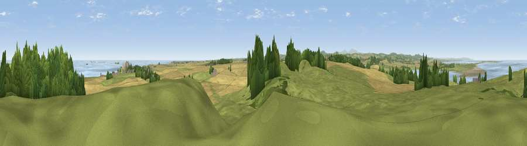

Viewpoint near Bamburgh
#4574 in England · top 27% of its area beats it · near BamburghThe view, rendered

A 360° render of this exact spot computed from the terrain model, tree cover and land cover — summer colours, afternoon light, calibrated against photographs of famous viewpoints. Real trees, hedges and buildings will differ in detail.
The panorama
Grey silhouette: terrain skyline in each direction (720 bearings, Earth curvature and refraction included). Dashed green: skyline with trees (+15 m) and buildings (+8 m) as obstacles. Blue strip: how far the ground is visible on each bearing.
Where the view opens
Wedge length = distance to the farthest visible ground on that bearing (vegetation-aware). Rings at 10, 25 and 50 km.
What fills the view
38% cropland · 34% grassland · 17% woodland · 10% water ·
Angular shares of the visible panorama (visual magnitude), not map area. Landscape diversity 0.58 (0–1 Shannon).
Key numbers
More beautiful places nearby
The staircase of upgrades: each row has a higher view potential than everything closer. Driving times are estimates from straight-line distance, calibrated against real road routing — check an actual route before setting out.
| Place | Direction | Drive | Score |
|---|---|---|---|
| Viewpoint near Bamburgh | NNE · 1 km | ~2 min | 77.2 |
| Viewpoint near Warenford | SW · 6 km | ~13 min | 77.3 |
| Viewpoint near Belford | WSW · 10 km | ~19 min | 81.2 |
| Viewpoint near Belford | W · 10 km | ~20 min | 81.3 |
| Viewpoint near Fenwick | W · 11 km | ~20 min | 82.5 |
| Greensheen Hill | W · 11 km | ~21 min | 87.5 |
| Viewpoint near Chillingham | SW · 13 km | ~24 min | 88.1 |
| Viewpoint near Easington | SSE · 129 km | ~153 min | 90.2 |
55.60810, -1.73906 · source: screening · position refined by local search. Computed location — check access rights before visiting.